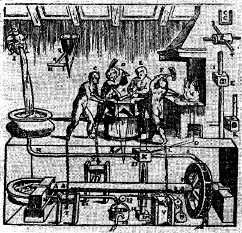
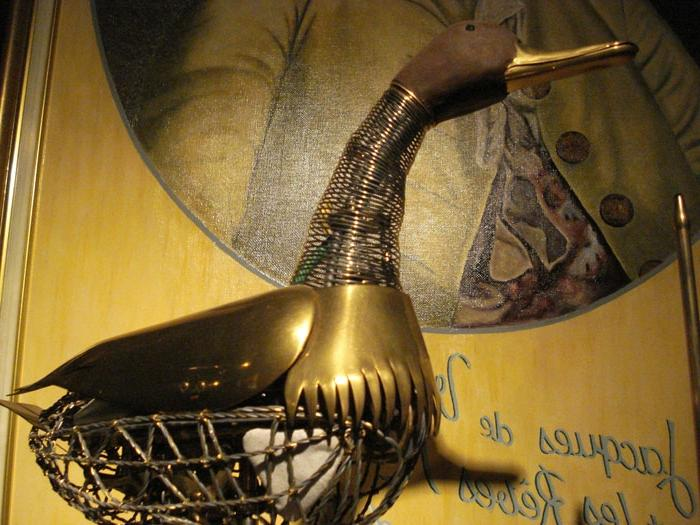
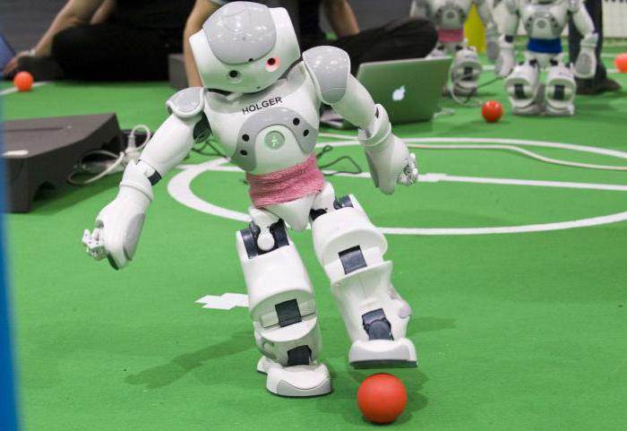

История роботехники
На всех этапах своего развития человечество стремилось создать орудия, механизмы, машины облегчающие труд. Эволюция современного общества и производства обусловила возникновение и развитие нового класса машин – роботов, и соответствующего научного направления – робототехники.
Глубокая древность
История робототехники уходит в глубокую древность. Уже в те времена появились идеи создания технических средств, похожих на человека, и были предприняты первые попытки по их созданию. Статуи богов с подвижными частями тела (руки, голова) появились еще в Древнем Египте, Вавилоне, Китае. В 3 веке до н. э. римский поэт Клавдий упоминал об автомате, изготовленном Архимедом. Он имел форму стеклянного шара с изображением небесного свода, на котором воспроизводилось движение всех известных в то время небесных светил.
Средние века
В средние века большой популярностью пользовались различного рода автоматы, основанные на использовании часовых механизмов. Были созданы всевозможные часы с движущимися фигурами людей, ангелов и т. п. К этому периоду относятся сведения о создании первых подвижных человекоподобных механических фигур – андроидов.

Одновременно с расцветом часового мастерства. Французский механик и изобретатель Жак де Вокансон (1709-1789) создал в 1738 году первое работающее человекоподобное устройство , которое играло на флейте. «Флейтист» был ростом с человека.
Вокансон также создал механическую утку, покрытую настоящими перьями, которая могла ходить, двигать крыльями, крякать, пить воду, клевать зерно и, перемалывая его маленькой внутренней мельницей, отправлять нужду на пол. Утка состояла из более чем 400 движущихся деталей и была однозначно признана венцом творения мастера.
Новое время
Благодаря развитию электротехники и электроники реализуются потребности общества и производства в различных автоматических устройствах. Литература и искусство в это время играют роль катализатора процесса развития робототехники. Именно в этот период появляется много научно-фантастических произведений литературы, в которых роботы-андроиды играют главные роли.
Современность
Современные роботы проникли в очень многие сферы человеческой жизни. Их многообразие потрясает: здесь и просто детские игрушки, и целые автоматизированные заводы, хирургические комплексы, искусственные домашние питомцы, военные и гражданские беспилотные аппараты. Их постоянной разработкой и совершенствованием занимается множество организаций в мире.
Самый главный страх человечества в отношении машин – это боязнь того, что они, став совершенными, однажды перестанут подчиняться и начнут жить своей жизнью, превратив в рабов уже людей. Этот страх шел рука об руку с развитием робототехники. Он находит свое выражение как в мифологии (например, еврейский миф о големе, восставшем против своего создателя), так и в искусстве. Известнейшие фильмы "Матрица", "Терминатор", великое множество книг, повествующих о восстании машин. Пьеса Карела Чапека, давшая жизнь слову "робот", также заканчивается порабощением человечества его бывшими слугами.
Однако на современном этапе развития науки эти страхи бессмысленны. У роботов отсутствует сознание, аналогичное человеческому, поэтому у них не может быть вообще никаких желаний, не говоря уже о стремлении захватить мир.